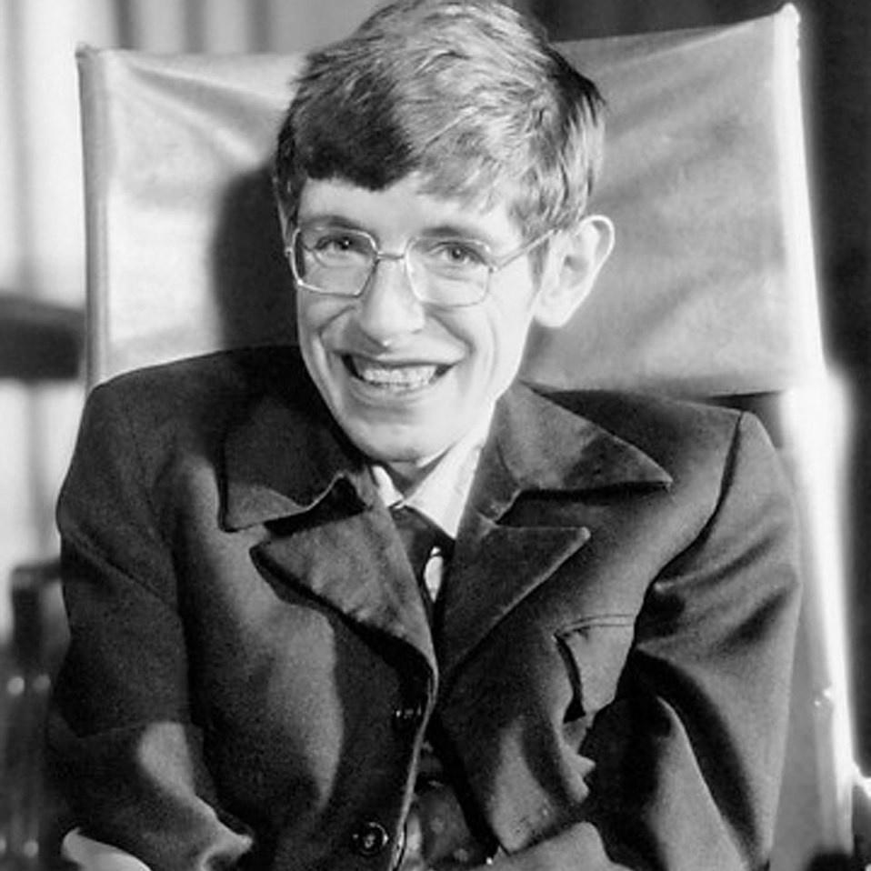
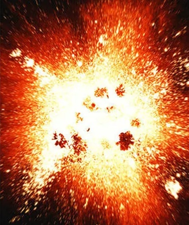
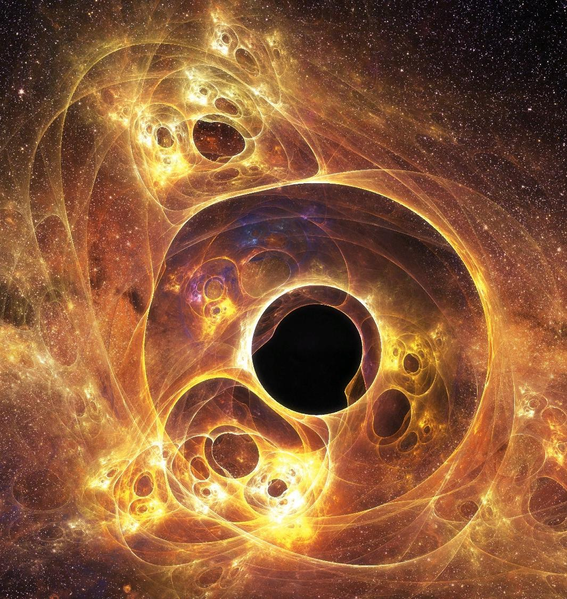
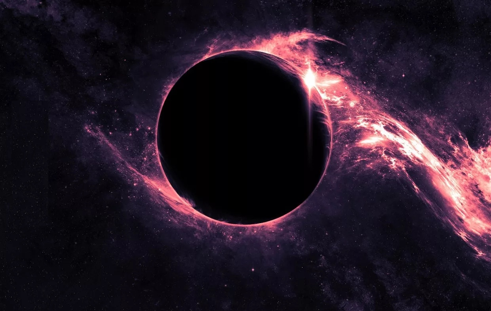

Хокинг был почётным членом Королевского общества искусств, пожизненным членом Папской академии наук, был удостоен Президентской медали Свободы — высшей награды для гражданских лиц в США. В 2002 году в результате опроса Би-би-си по определению ста величайших британцев всех времён Хокинг занял 25-е место. Учёный был Лукасовским профессором математики Кембриджского университета в 1979—2009 годах, добился коммерческого успеха благодаря научно-популярным произведениям, в которых он рассуждает о собственных теориях и космологии в целом. Книга Хокинга «Краткая история времени» входила в список бестселлеров британского издания The Sunday Times на протяжении рекордных 237 недель.

В 1971 году в рамках теории Большого взрыва Хокинг предположил понятие микроскопических чёрных дыр, масса которых могла бы составлять миллиарды тонн и при этом занимать объём протона. Эти объекты находятся на стыке теории относительности (из-за огромной массы и гравитации) и квантовой механики (из-за их размера).

Основная область исследований Хокинга — космология и квантовая гравитация. Его главные достижения:
применение термодинамики к описанию чёрных дыр и разработка в 1975 году теории о том, что чёрные дыры «испаряются» за счёт явления, получившего название излучение Хокинга.

Текст Текст Текст Текст Текст Текст Текст Текст Текст Текст Текст Текст Текст Текст Текст Текст Текст Текст Текст Текст Текст Текст Текст Текст Текст Текст Текст Текст Текст Текст Текст Текст Текст Текст Текст Текст Текст Текст Текст Текст